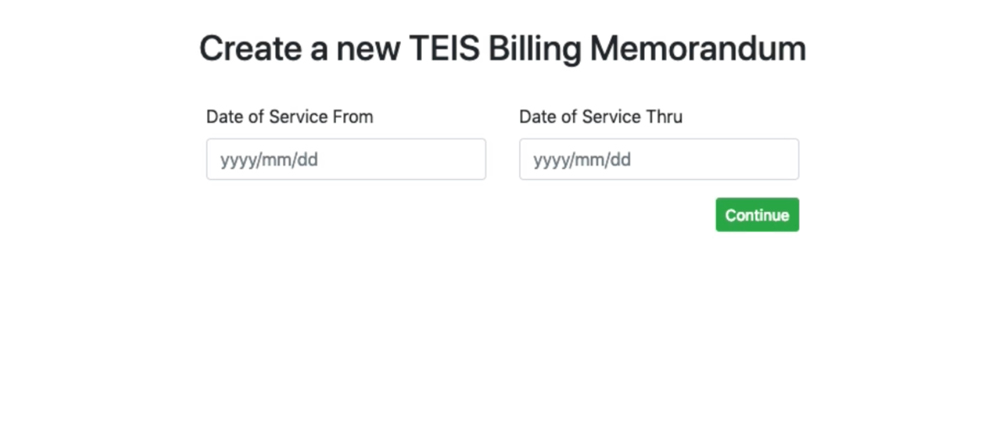

The interface for creating a TEIS billing memorandum
(Post 2 of 5) This is the second in a series of posts about the origins of Ambiki’s values.
Our second value: “Favor simplicity”.
--
Three months into my role at Curlee Communications (now Sidekick Therapy Partners), a sudden departure left me in charge of the colossal task of monthly billing for the Tennessee Early Intervention System (TEIS). Why? I was the one "good with spreadsheets."
That first month, the task took me over two weeks, working much more than 40 hours each week. By the time I finished it was already time to start the next month's memorandum. At this point it was bordering on absurd; this would be my full-time job unless I found a way to automate it.
Here's what the process looked like:
Verify Patient Sessions: Manually cross-check each patient on the TEIS spreadsheet (which we had to update as new patients started or billing situations changed) with Curlee's then-current EMR system (which will remain nameless) for any sessions they had during the month.
Data Entry: Manually enter each session's details into Excel – from location to duration to then hand calculating what TEIS owed us based on a confusing set of rules (all of this often required sifting through the sluggish EMR software where pages took over 10 seconds to load).
Compile Explanation of Benefits (EOBs): Every line item needed its corresponding EOBs. Some patients had claims with multiple insurance companies. We had to print each EOB, highlight the date of service and payment amount in yellow, then scan it back into the computer. Picture doing this for hundreds of sessions.
Package It Up: All of this had to culminate into one neat PDF. Three invoices from three Excel tabs, with all EOBs in the precise order.
Sounds nightmarish, right?
Automating the process posed its challenges:
The EMR software Curlee used lacked a link between the treatment, invoice, and EOB.
The new EMR we were building (which would later be named 'Cue') was still embryonic, it hadn’t even earned a title as an EMR yet. This would actually be the first "feature".
Exporting data out of the EMR software Curlee was using was no simple task.
We also needed ways for calculating TEIS eligibility, identifying TEIS patients, and automating the EOB highlighting process.
Well, I was determined I would only suffer doing that manually one time. A few weeks after navigating that tedious manual process, I emailed out a video, 1:42 minutes long, showcasing the new TEIS process automation. My voiceover began, “What used to take hours and a few people should now take less than the length of this video”.
And indeed, the process was distilled to: “Enter start date”, “Enter end date”, click “Generate invoice”, and print to PDF.
I was proud, it felt like a mic drop moment. Simplicity for our users often means fighting through a lot of blood, sweat, tears, and complexity to get there. But that is the core of our value "Favor simplicity"; we do the hard work so that our solutions are intentionally simple.